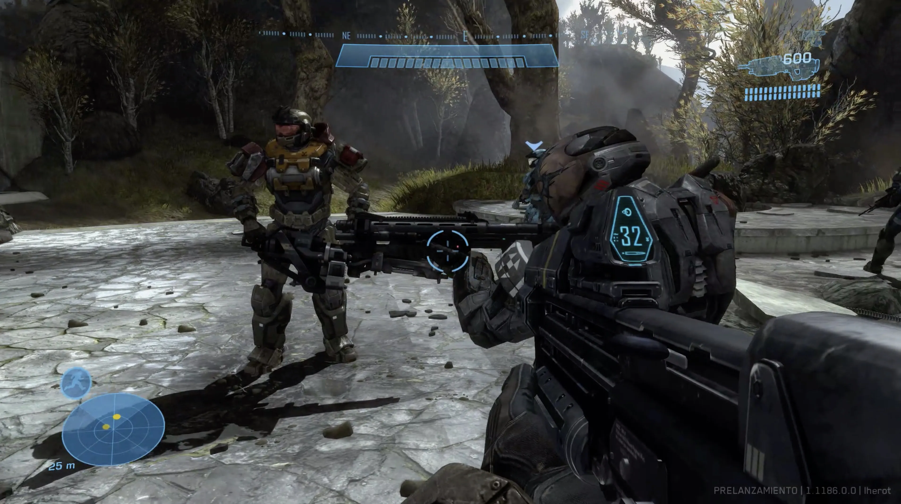
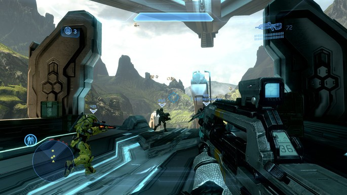

Halo
Halo es una franquicia de videojuegos de ciencia ficción creada y desarrollada por Bungie Studios hasta Halo Reach, y gestionada ahora por 343 Industries, propiedad de Xbox Game Studios.
La serie se centra en una guerra interestelar entre la humanidad y una alianza teocrática de alienígenas conocidos como Covenant
Los juegos de la serie han sido considerados de los mejores Videojuegos de disparos en primera persona para videoconsola y es visto como uno de los juegos insignia de la consola Xbox.
Esto ha llevado a la competencia a generar los videojuegos llamados Halo Killers que compitan o aspiren a superar a Halo
¿Cómo se juega?
Modos de juego principales
Campaña: Juegas una historia que sigue al protagonista, el Jefe Maestro (Master Chief), mientras luchas contra razas alienígenas (como los Covenant y los Flood) y tratas de salvar a la humanidad.
Multijugador: Competencia contra otros jugadores en línea o en red local. Puede ser en diferentes modos, como Team Deathmatch, Captura la Bandera, y Infección.
Recuerda que lo puedes encontrar en las siguientes pltaformas.




Haz click aquí para saber más del juego.